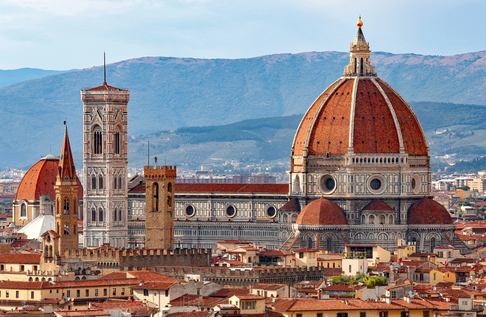
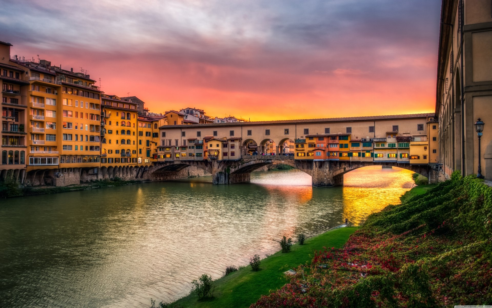
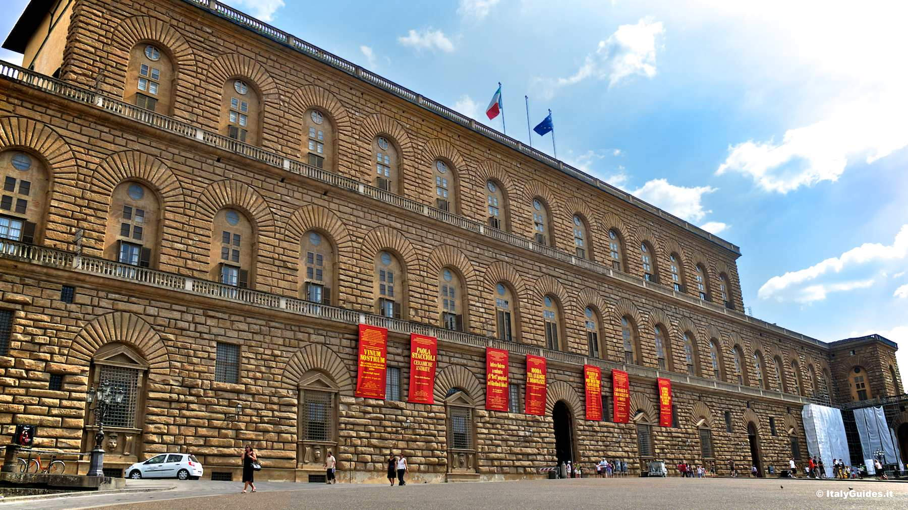
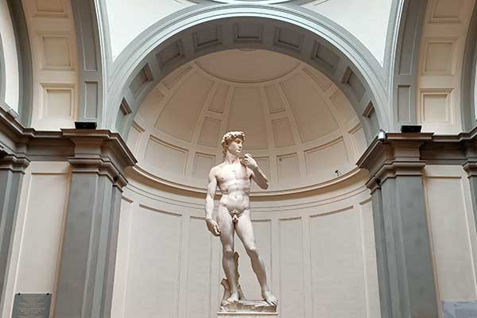
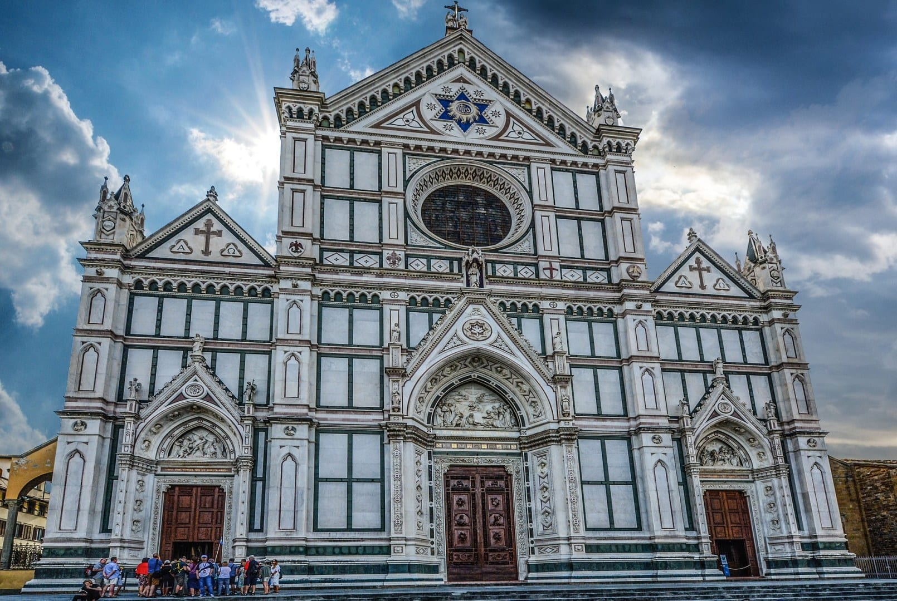

Attrazioni di Firenze
Dettagli, orari aggiornati e recensioni sintetiche.

Cattedrale di Santa Maria del Fiore
Capolavoro del Rinascimento con la celebre cupola di Brunelleschi.
- Indirizzo: Piazza del Duomo
- Orari: Lun–Sab 10:15–16:45, Dom 13:30–16:45
- Prezzi: Cattedrale gratis; cupola/battistero con biglietto cumulativo

Galleria degli Uffizi
Uno dei musei più importanti al mondo, con opere di Botticelli, Leonardo e Michelangelo.
- Indirizzo: Piazzale degli Uffizi
- Orari: Mar–Dom 8:15–18:30, chiuso Lunedì
- Prezzi: Intero variabile; consigliata prenotazione

Ponte Vecchio
Storico ponte sul fiume Arno, famoso per le botteghe orafe.
- Indirizzo: Ponte Vecchio
- Orari: Sempre aperto (area pubblica)
- Prezzi: Accesso libero

Palazzo Pitti e Giardino di Boboli
Residenza storica con musei e meravigliosi giardini rinascimentali.
- Indirizzo: Piazza de' Pitti
- Orari: Mar–Dom 8:15–18:30, chiuso Lunedì
- Prezzi: Biglietto musei; Boboli con ticket dedicato

Galleria dell'Accademia (David)
Celebre per il David di Michelangelo e altre opere rinascimentali.
- Indirizzo: Via Ricasoli
- Orari: Mar–Dom 9:00–18:45, chiuso Lunedì
- Prezzi: Biglietto d'ingresso; consigliata prenotazione

Basilica di Santa Croce
Luogo di sepoltura di grandi italiani, con opere di Giotto e Donatello.
- Indirizzo: Piazza Santa Croce
- Orari: Lun–Sab 9:30–17:30, Dom 12:30–17:30
- Prezzi: Biglietto d'ingresso